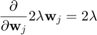
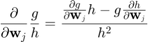
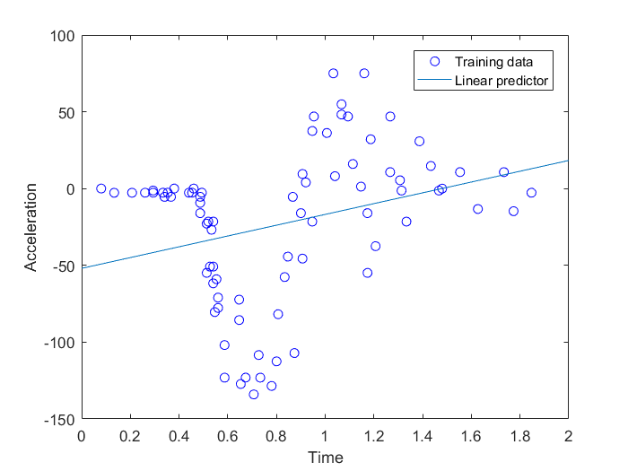
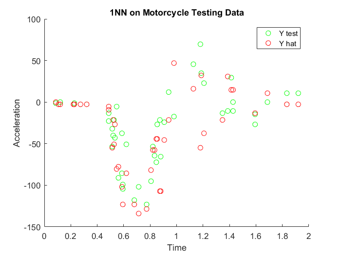
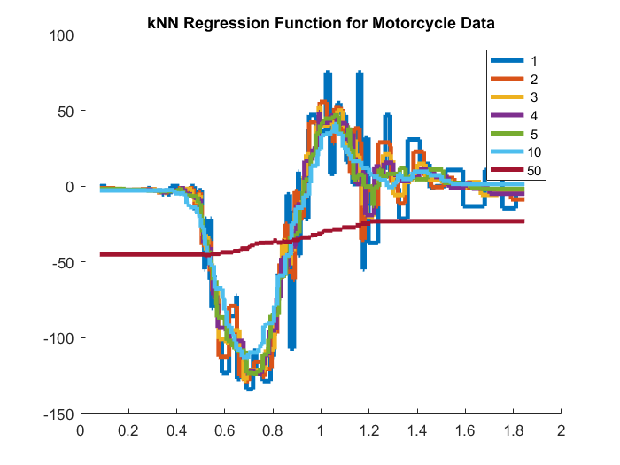
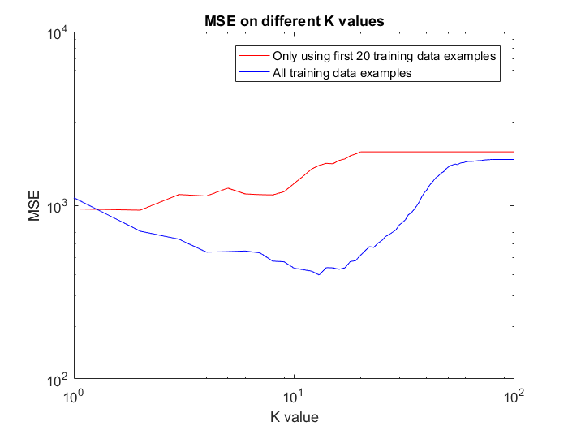
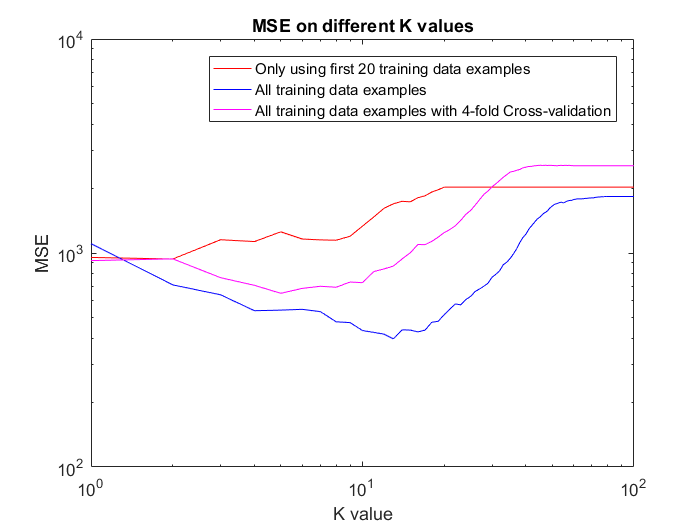
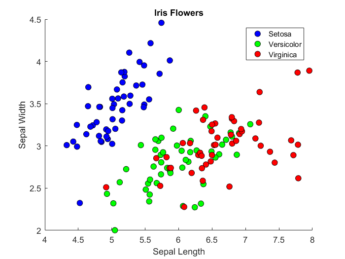
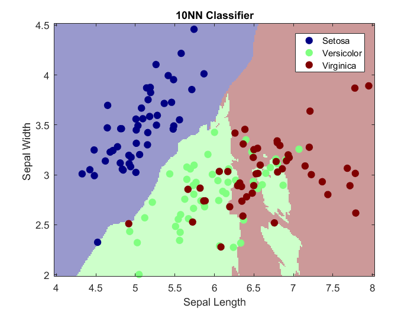
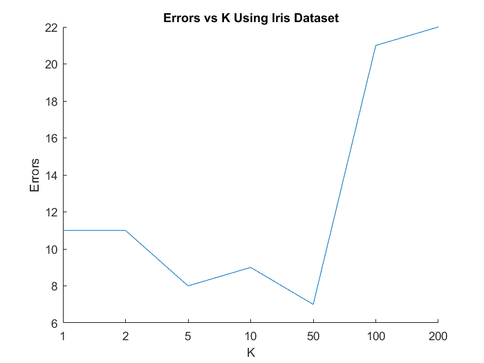

<!DOCTYPE html
  PUBLIC "-//W3C//DTD HTML 4.01 Transitional//EN">
<html><head>
      <meta http-equiv="Content-Type" content="text/html; charset=utf-8">
   <!--
This HTML was auto-generated from MATLAB code.
To make changes, update the MATLAB code and republish this document.
      --><title>2018 - CAB420 - Machine Learning</title><meta name="generator" content="MATLAB 9.1"><link rel="schema.DC" href="http://purl.org/dc/elements/1.1/"><meta name="DC.date" content="2018-04-16"><meta name="DC.source" content="report.m"><style type="text/css">
html,body,div,span,applet,object,iframe,h1,h2,h3,h4,h5,h6,p,blockquote,pre,a,abbr,acronym,address,big,cite,code,del,dfn,em,font,img,ins,kbd,q,s,samp,small,strike,strong,sub,sup,tt,var,b,u,i,center,dl,dt,dd,ol,ul,li,fieldset,form,label,legend,table,caption,tbody,tfoot,thead,tr,th,td{margin:0;padding:0;border:0;outline:0;font-size:100%;vertical-align:baseline;background:transparent}body{line-height:1}ol,ul{list-style:none}blockquote,q{quotes:none}blockquote:before,blockquote:after,q:before,q:after{content:'';content:none}:focus{outine:0}ins{text-decoration:none}del{text-decoration:line-through}table{border-collapse:collapse;border-spacing:0}

html { min-height:100%; margin-bottom:1px; }
html body { height:100%; margin:0px; font-family:Arial, Helvetica, sans-serif; font-size:10px; color:#000; line-height:140%; background:#fff none; overflow-y:scroll; }
html body td { vertical-align:top; text-align:left; }

h1 { padding:0px; margin:0px 0px 25px; font-family:Arial, Helvetica, sans-serif; font-size:1.5em; color:#d55000; line-height:100%; font-weight:normal; }
h2 { padding:0px; margin:0px 0px 8px; font-family:Arial, Helvetica, sans-serif; font-size:1.2em; color:#000; font-weight:bold; line-height:140%; border-bottom:1px solid #d6d4d4; display:block; }
h3 { padding:0px; margin:0px 0px 5px; font-family:Arial, Helvetica, sans-serif; font-size:1.1em; color:#000; font-weight:bold; line-height:140%; }

a { color:#005fce; text-decoration:none; }
a:hover { color:#005fce; text-decoration:underline; }
a:visited { color:#004aa0; text-decoration:none; }

p { padding:0px; margin:0px 0px 20px; }
img { padding:0px; margin:0px 0px 20px; border:none; }
p img, pre img, tt img, li img, h1 img, h2 img { margin-bottom:0px; } 

ul { padding:0px; margin:0px 0px 20px 23px; list-style:square; }
ul li { padding:0px; margin:0px 0px 7px 0px; }
ul li ul { padding:5px 0px 0px; margin:0px 0px 7px 23px; }
ul li ol li { list-style:decimal; }
ol { padding:0px; margin:0px 0px 20px 0px; list-style:decimal; }
ol li { padding:0px; margin:0px 0px 7px 23px; list-style-type:decimal; }
ol li ol { padding:5px 0px 0px; margin:0px 0px 7px 0px; }
ol li ol li { list-style-type:lower-alpha; }
ol li ul { padding-top:7px; }
ol li ul li { list-style:square; }

.content { font-size:1.2em; line-height:140%; padding: 20px; }

pre, code { font-size:12px; }
tt { font-size: 1.2em; }
pre { margin:0px 0px 20px; }
pre.codeinput { padding:10px; border:1px solid #d3d3d3; background:#f7f7f7; }
pre.codeoutput { padding:10px 11px; margin:0px 0px 20px; color:#4c4c4c; }
pre.error { color:red; }

@media print { pre.codeinput, pre.codeoutput { word-wrap:break-word; width:100%; } }

span.keyword { color:#0000FF }
span.comment { color:#228B22 }
span.string { color:#A020F0 }
span.untermstring { color:#B20000 }
span.syscmd { color:#B28C00 }

.footer { width:auto; padding:10px 0px; margin:25px 0px 0px; border-top:1px dotted #878787; font-size:0.8em; line-height:140%; font-style:italic; color:#878787; text-align:left; float:none; }
.footer p { margin:0px; }
.footer a { color:#878787; }
.footer a:hover { color:#878787; text-decoration:underline; }
.footer a:visited { color:#878787; }

table th { padding:7px 5px; text-align:left; vertical-align:middle; border: 1px solid #d6d4d4; font-weight:bold; }
table td { padding:7px 5px; text-align:left; vertical-align:top; border:1px solid #d6d4d4; }


  </style></head><body><div class="content"><h1>2018 - CAB420 - Machine Learning</h1><!--introduction--><p>Group Assignment 1 Alex Wilson and Christopher Ayling</p><!--/introduction--><h2>Contents</h2><div><ul><li><a href="#1">Theory</a></li><li><a href="#6">1. Feature, Classes and Linear Regression</a></li><li><a href="#12">2. kNN Regression</a></li><li><a href="#16">3. Hold-out and Cross-validation</a></li><li><a href="#20">4. Nearest Neighbor Classifiers</a></li><li><a href="#25">5. Perceptron and Logistic Regression</a></li></ul></div><h2 id="1">Theory</h2><p>Logistic regression is a method of fitting a probabilistic classifier that gives soft linear thresh-olds. It is common to use logistic regression with an objective function consisting of the negative log probability of the data plus an L2 regularizer:</p><p></p><p><b>(a) Find the partial derivatives </b></p><p></p><p></p><p></p><p></p><p></p><p></p><p></p><p><b>(b) Find the partial second derivatives </b></p><p>Hessian Matrix of </p><p></p><p>When k == j;</p><p></p><p></p><p></p><p></p><p></p><p></p><p></p><p></p><p></p><p></p><p></p><p></p><p>When j ~= k</p><p></p><p></p><p></p><p></p><p><b>(c) From these results, show that  is a convex function.</b></p><h2 id="6">1. Feature, Classes and Linear Regression</h2><p><b>(a) Plot the training data in a scatter plot.</b></p><pre class="codeinput"><span class="comment">%Clean up</span>
clc
clear
close <span class="string">all</span>
<span class="comment">%Load in and set up variables</span>
mTrain = load(<span class="string">'data/mcycleTrain.txt'</span>);
ytr = mTrain(:,1);
xtr = mTrain(:,2);
<span class="comment">%Plot the training data</span>
plot(xtr, ytr, <span class="string">'bo'</span>);
hold <span class="string">on</span>;
legend(<span class="string">'Training data'</span>);
xlabel(<span class="string">'Time'</span>);
ylabel(<span class="string">'Acceleration'</span>);
</pre> <p><b>(b) Create a linear predictor (slope and intercept) using the above functions. Plot it on the same plot as the training data.</b></p><pre class="codeinput">linXtr = polyx(xtr, 1);
linLearner = linearReg(linXtr, ytr);
xline = [0:.01:2]';
yline = predict(linLearner, polyx(xline, 1));
plot(xline, yline);
legend(<span class="string">'Training data'</span>, <span class="string">'Linear predictor'</span>);
xlabel(<span class="string">'Time'</span>);
ylabel(<span class="string">'Acceleration'</span>);
</pre> <p><b>(c) Create another plot with the data and a fifth-degree polynomial</b></p><pre class="codeinput">figure;
plot(xtr, ytr, <span class="string">'bo'</span>);
hold <span class="string">on</span>;
fifthXtr = polyx(xtr, 5);
fifthLearner = linearReg(fifthXtr, ytr);
xline = [0:.01:2]';
yline = predict(fifthLearner, polyx(xline, 5));
plot(xline, yline);
legend(<span class="string">'Training data'</span>, <span class="string">'Fifth degree polynomial'</span>);
xlabel(<span class="string">'Time'</span>);
ylabel(<span class="string">'Acceleration'</span>);
axis([0 2 -150 100]);
</pre> <p><b>(d) Calculate the mean squared error associated with each of your learned models on the training data.</b></p><pre class="codeinput">training_MSE_of_linear_predictor = mse(linLearner, linXtr, ytr)
training_MSE_of_fifth_degree_predictor = mse(fifthLearner, fifthXtr, ytr)
</pre><pre class="codeoutput">
training_MSE_of_linear_predictor =

   2.2708e+03


training_MSE_of_fifth_degree_predictor =

   1.2546e+03

</pre><p><b>(e) Calculate the MSE for each model on the test data (in mcycleTest.txt).</b></p><pre class="codeinput">mTest = load(<span class="string">'data/mcycleTest.txt'</span>);
ytst = mTest(:,1);
xtst = mTest(:,2);
linXtst = polyx(xtst, 1);
fifthXtst = polyx(xtst, 5);

test_MSE_of_linear_predictor = mse(linLearner, linXtst, ytst)
test_MSE_of_fifth_degree_predictor = mse(fifthLearner, fifthXtst, ytst)
</pre><pre class="codeoutput">
test_MSE_of_linear_predictor =

   1.7049e+03


test_MSE_of_fifth_degree_predictor =

  999.6535

</pre><h2 id="12">2. kNN Regression</h2><pre class="codeinput">clc
clear
<span class="comment">% Load train data</span>
mTrain = load(<span class="string">'mcycleTrain.txt'</span>);
Ytrain = mTrain(:,1);
Xtrain = mTrain(:,2);
<span class="comment">% Load test data</span>
mTest = load(<span class="string">'mcycleTest.txt'</span>);
Ytest = mTest(:,1);
Xtest = mTest(:,2);
<span class="comment">% Plot Training Data</span>
figure(<span class="string">'name'</span>, <span class="string">'Motorcycle Data'</span>);
hold <span class="string">on</span>
plot(Xtrain, Ytrain, <span class="string">'bo'</span>);
title(<span class="string">'Motorcycle Training Data'</span>);
xlabel(<span class="string">'Time'</span>);
ylabel(<span class="string">'Acceleration'</span>);
legend(<span class="string">'Training data'</span>);
hold <span class="string">off</span>
</pre> <p><b>(a) Using the knnRegress class, implement (add code to) the predict function to make it functional.</b></p><pre class="language-matlab">
    <span class="comment">% Test function: predict on Xtest</span>
    <span class="keyword">function</span> Yte = predict(obj,Xte)
      [Ntr,Mtr] = size(obj.Xtrain);
      [Nte,Mte] = size(Xte);
      classes = unique(obj.Ytrain);
      Yte = repmat(obj.Ytrain(1), [Nte,1]);
      K = min(obj.K, Ntr);
      <span class="keyword">for</span> i=1:Nte
        dist = sum( bsxfun( @minus, obj.Xtrain, Xte(i,:) ).^2 , 2);
        [tmp,idx] = sort(dist);
        
        <span class="comment">% Our code here</span>
        kclosest_vals = [];
        <span class="keyword">for</span> j=1:K
            kclosest_vals = [kclosest_vals, obj.Ytrain(idx(j))];
        <span class="keyword">end</span>
        Yte(i) = sum(kclosest_vals)/K;
      <span class="keyword">end</span>;
    <span class="keyword">end</span>

</pre><pre class="codeinput">learner = knnRegress(1,Xtrain, Ytrain);
Yhat = predict(learner, Xtest);
figure(<span class="string">'name'</span>, <span class="string">'Knn Testing'</span>);
hold <span class="string">on</span>
plot(Xtest, Ytest, <span class="string">'go'</span>);
plot(Xtest, Yhat, <span class="string">'ro'</span>);
legend(<span class="string">'Y test'</span>, <span class="string">'Y hat'</span>);
title(<span class="string">'1NN on Motorcycle Testing Data'</span>);
xlabel(<span class="string">'Time'</span>);
ylabel(<span class="string">'Acceleration'</span>);
hold <span class="string">off</span>
</pre> <p><b>(b) Using the same technique as in Problem 1a, plot the predicted function for several values of . How does the choice of  relate to the &#8220;complexity&#8221; of the regression function?</b></p><p><i>The higher the value of K, the lower the complexity.</i></p><pre class="codeinput">ks = [1, 2, 3, 4, 5, 10, 50];
Xs = min(Xtrain):0.001:max(Xtrain); Xs = Xs';
figure(<span class="string">'name'</span>, <span class="string">'testing values of k'</span>)
hold <span class="string">on</span>
learner = knnRegress(1,Xtrain, Ytrain);
<span class="keyword">for</span> i=1:length(ks)
    learner = knnRegress(ks(i),Xtrain, Ytrain);
    stairs(Xs, predict(learner, Xs), <span class="string">'-'</span>, <span class="string">'linewidth'</span>, 3);
<span class="keyword">end</span>
title(<span class="string">'kNN Regression Function for Motorcycle Data'</span>)
legend(cellstr(int2str(ks')))
hold <span class="string">off</span>
</pre> <p><b>(c) What kind of functions can be output by a nearest neighbor regression function? Briefly justify your conclusion.</b></p><p><i>As a KNN regression produces a piecewise linear function, given the right data, any function can be approximated.</i></p><h2 id="16">3. Hold-out and Cross-validation</h2><p><b>(a) Similarly to Problem 1 and 2, compute the MSE of the test data on a model trained on only the first 20 training data examples for . Plot the MSE versus  on a log-log scale (see help loglog).</b></p><pre class="codeinput"><span class="comment">%Clean up</span>
clc
clear
close <span class="string">all</span>
<span class="comment">%Import data</span>
mTrain = load(<span class="string">'data/mcycleTrain.txt'</span>);
mTest = load(<span class="string">'data/mcycleTest.txt'</span>);
ytst = mTest(:,1); <span class="comment">%  testing data</span>
xtst = mTest(:,2);

ytr = mTrain(1:20,1); <span class="comment">% first 20 training data examples</span>
xtr = mTrain(1:20,2);
MSE1 = zeros(100, 1); <span class="comment">% initalise a vector for MSE of each k value</span>

<span class="keyword">for</span> k=1:100 <span class="comment">% iterate on each k value</span>
    learner = knnRegress(k, xtr, ytr); <span class="comment">% create the learner using k</span>
    yhat = predict(learner, xtst); <span class="comment">% predict and find MSE relative to test data</span>
    MSE1(k) = mean((yhat - ytst).^2);
<span class="keyword">end</span>
figure;
loglog(1:100, MSE1, <span class="string">'r'</span>); <span class="comment">% plot on a loglog graph</span>
xlabel(<span class="string">'K value'</span>);
ylabel(<span class="string">'MSE'</span>);
title(<span class="string">'MSE on different K values'</span>);
legend(<span class="string">'Only using first 20 training data examples'</span>);
hold <span class="string">on</span>;
</pre> <p><b>(b) Repeat, but use all the training data. What happened? Contrast with your results from problem 1 (hint: which direction is &#8220;complexity&#8221; in this picture?).</b></p><pre class="codeinput">ytr = mTrain(:,1); <span class="comment">% all training data examples</span>
xtr = mTrain(:,2);
MSE2 = zeros(100, 1); <span class="comment">% initalise a vector for MSE of each k value</span>

<span class="keyword">for</span> k=1:100 <span class="comment">% iterate on each k value</span>
    learner = knnRegress(k, xtr, ytr); <span class="comment">% create the learner using k</span>
    yhat = predict(learner, xtst); <span class="comment">% predict and find MSE relative to test data</span>
    MSE2(k) = mean((yhat - ytst).^2);
<span class="keyword">end</span>

loglog(1:100, MSE2, <span class="string">'b'</span>); <span class="comment">% plot on the loglog graph</span>
legend(<span class="string">'Only using first 20 training data examples'</span>, <span class="keyword">...</span>
    <span class="string">'All training data examples'</span>);
</pre> <p><b>(c) Using only the training data, estimate the curve using 4-fold cross-validation. Split the training data into two parts, indices 1:20 and 21:80; use the larger of the two as training data and the smaller as testing data, then repeat three more times with different sets of 20 and average the MSE. Add this curve to your plot. Why might we need to use this technique?</b></p><pre class="codeinput">MSE3 = zeros(100, 1); <span class="comment">% initalise a vector for MSE of each k value</span>
<span class="keyword">for</span> k=1:100 <span class="comment">% test for 100 values of k</span>
    MSEtemp = zeros(4, 1); <span class="comment">% temp mse array for each i (averaged for each k)</span>
    <span class="keyword">for</span> i=1:4
        m = i*20; n = m-19; <span class="comment">% local bounds</span>
        iTest = mTrain(n:m,:); <span class="comment">% 20 indicies for testing</span>
        iTrain = setdiff(mTrain, iTest, <span class="string">'rows'</span>); <span class="comment">% rest for training</span>
        learner = knnRegress(k, iTrain(:,2), iTrain(:,1)); <span class="comment">% train the learner</span>
        yhat = predict(learner, iTest(:,2)); <span class="comment">% predict at testing x values</span>
        MSEtemp(i) = mean((yhat - iTest(:,1)).^2);
    <span class="keyword">end</span>
    MSE3(k) = mean(MSEtemp); <span class="comment">% average the MSE</span>
<span class="keyword">end</span>
loglog(1:100, MSE3, <span class="string">'m'</span>); <span class="comment">% plot on the loglog graph</span>
legend(<span class="string">'Only using first 20 training data examples'</span>, <span class="keyword">...</span>
    <span class="string">'All training data examples'</span>, <span class="keyword">...</span>
    <span class="string">'All training data examples with 4-fold Cross-validation'</span>);
</pre> <h2 id="20">4. Nearest Neighbor Classifiers</h2><pre class="codeinput">clc
clear
<span class="comment">% Load Iris Dataset</span>
iris = load(<span class="string">'iris.txt'</span>);
pi = randperm(size(iris, 1));
Y = iris(pi, 5);
X = iris(pi, 1:2);
m = length(Y);
</pre><p><b>(a) Plot the data by their feature values, using the class value to select the color.</b></p><pre class="codeinput">figure(<span class="string">'name'</span>, <span class="string">'Iris Flowers'</span>)
title(<span class="string">'Iris Flowers'</span>)
xlabel(<span class="string">'Sepal Length'</span>)
ylabel(<span class="string">'Sepal Width'</span>)
hold <span class="string">on</span>
plot(X(Y==0,1), X(Y==0,2), <span class="string">'ko'</span>, <span class="string">'markersize'</span>,7, <span class="string">'markerfacecolor'</span>, <span class="string">'blue'</span>);
plot(X(Y==1,1), X(Y==1,2), <span class="string">'ko'</span>, <span class="string">'markersize'</span>,7, <span class="string">'markerfacecolor'</span>, <span class="string">'green'</span>);
plot(X(Y==2,1), X(Y==2,2), <span class="string">'ko'</span>, <span class="string">'markersize'</span>,7, <span class="string">'markerfacecolor'</span>, <span class="string">'red'</span>);
legend(<span class="string">'Setosa'</span>, <span class="string">'Versicolor'</span>, <span class="string">'Virginica'</span>)
hold <span class="string">off</span>
</pre> <p><b>(b) Use the provided knnClassify class to learn a 1-nearest-neighbor predictor.</b></p><pre class="codeinput">k = 1;
nnlearner = knnClassify(k, X, Y);
class2DPlot(nnlearner, X, Y);
title(string(k) + <span class="string">'NN Classifier'</span>);
xlabel(<span class="string">'Sepal Length'</span>);
ylabel(<span class="string">'Sepal Width '</span>);
legend(<span class="string">'Setosa'</span>, <span class="string">'Versicolor'</span>, <span class="string">'Virginica'</span>)
</pre> <p><b>(c) Do the same thing for several values of k (say, [1, 3, 10, 30]) and comment on their appearance.</b></p><p><i>The higher the value of k, the smoother the desicion boundary. When k is close to 1, the classifier is prone to outliers. In general, this means that a larger value of K will likely lead to better generalisation and therefore a higher test time accuracy.</i></p><pre class="codeinput">ks = [1, 3, 10, 30];
<span class="keyword">for</span> i=1:length(ks)
    learner = knnClassify(ks(i), X, Y);
    class2DPlot(learner, X, Y);
    title(string(ks(i)) + <span class="string">'NN Classifier'</span>);
    xlabel(<span class="string">'Sepal Length'</span>);
    ylabel(<span class="string">'Sepal Width '</span>);
    legend(<span class="string">'Setosa'</span>, <span class="string">'Versicolor'</span>, <span class="string">'Virginica'</span>)
<span class="keyword">end</span>
</pre>    <p><b>(d) Now split the data into an 80/20 training/validation split. For , learn a model on the 80% and calculate its performance (# of data classified incorrectly) on the validation data. What value of k appears to generalize best given your training data? Comment on the performance at the two endpoints, in terms of over- or under-fitting.</b></p><p><i>k=10 to k=50 appears to generalize best on the training data. When k is near 1, the classifier overfits to the training data (k=1 has an accuracy of 1.0) when k gets too large however, the classifier underfits. When over fitting/underfitting occur depend on the size and shape of the dataset.</i></p><pre class="codeinput">split = 0.8; train_size = floor(split*m);

Xtrain = X(1:train_size,:);
Ytrain = Y(1:train_size,:);
Xtest = X(train_size+1:end,:);
Ytest = Y(train_size+1:end,:);

figure(<span class="string">'name'</span>, <span class="string">'Errors vs K'</span>);
hold <span class="string">on</span>

ks = [1, 2, 5, 10, 50, 100, 200];
errors = [];
<span class="keyword">for</span> i=1:length(ks)
    learner = knnClassify(ks(i), Xtrain, Ytrain);
    Yhat = predict(learner, Xtest);
    errors = [errors, sum(Yhat ~= Ytest)];
<span class="keyword">end</span>

title(<span class="string">'Errors vs K Using Iris Dataset'</span>);
xlabel(<span class="string">'K'</span>);
ylabel(<span class="string">'Errors'</span>);
plot(errors);
xticklabels(ks)
hold <span class="string">off</span>
</pre> <h2 id="25">5. Perceptron and Logistic Regression</h2><p><b>(a) Show the two classes in a scatter plot and verify that one is linearly separable while the other is not Clean up</b></p><pre class="codeinput">clear;
clc;
close <span class="string">all</span>;
<span class="comment">% Import</span>
iris = load(<span class="string">'data/iris.txt'</span>);
X = iris(:,1:2); Y = iris(:,end); <span class="comment">% use the first two features and classifier</span>
<span class="comment">% Reformat data</span>
[X, Y] = shuffleData(X,Y); <span class="comment">% shuffle the data</span>
X = rescale(X);
XA = X(Y&lt;2,:); YA=Y(Y&lt;2); <span class="comment">% split into classes 0 and 1</span>
XB = X(Y&gt;0,:); YB=Y(Y&gt;0); <span class="comment">% and 1 and 2</span>
</pre><p><b>(b) Write (fill in) the function @logisticClassify2/plot2DLinear.m so that it plots the two classes of data in dierent colors, along with the decision boundary (a line). Include the listing of your code in your report. To demo your function plot the decision boundary corresponding to the classifier </b></p><p><b>(c) Complete the predict.m function to make predictions for your linear classifier.</b></p><p><b>(d)</b></p><p></p><p></p><p><b>Derive the gradient of the regularized negative log likelihood  for logistic regression, and give it in your report</b></p><p><b>(e) Complete your train.m function to perform stochastic gradient descent on the logistic loss function.</b></p><p><b>(1) computing the surrogate loss function at each iteration</b></p><p><b>(2) computing the prediction and gradient associated with each data point</b></p><p><b>(3) a gradient step on the parameters </b></p><p><b>(4) a stopping criterion.</b></p><p><b>(f) Run your logistic regression classifier on both data sets (A and B); for this problem, use no regularization . Describe your parameter choices (stepsize, etc.) and show a plot of both the convergence of the surrogate loss and error rate, and a plot of the final converged classifier with the data (using e.g. plotClassify2D). In your report, please also include the functions that you wrote (at minimum, train.m, but possibly a few small helper functions as well)</b></p><pre class="codeinput">close <span class="string">all</span>
</pre><p class="footer"><br><a href="http://www.mathworks.com/products/matlab/">Published with MATLAB&reg; R2016b</a><br></p></div><!--
##### SOURCE BEGIN #####
%% 2018 - CAB420 - Machine Learning
% Group Assignment 1
% Alex Wilson and Christopher Ayling

%% Theory 
% Logistic regression is a method of fitting a probabilistic classifier
% that gives soft linear thresh-olds. It is common to use logistic
% regression with an objective function consisting of the negative log
% probability of the data plus an L2 regularizer:
%%
% 
% $$L(\textbf{w}) = -\displaystyle\sum_{i=1}^{N} Log \left( \frac{1}{1+e^{y_i \left( \textbf{w}^T \textbf{x}_i + b \right) }} \right) + \lambda \|\textbf{w}\|_2^2 $$
% 

%%
% *(a) Find the partial derivatives $\frac{\partial L}{\partial w_j}$*
%
% $$ u = 1 + e^{y_i \left( \textbf{w}^T \textbf{x} + b \right)} $$
%
% $$ L(\textbf{w}) = -\displaystyle\sum_{i=1}^{N} -log(u) + \lambda \|\textbf{w}\|_2^2 $$
%
% $$ \frac{\partial L}{\partial \textbf{w}_j} = -\displaystyle\sum_{i=1}^{N} \frac{\partial}{\partial u} - log(u) \frac{\partial u}{\partial \textbf{w}_j} +  \frac{\partial}{\partial \textbf{w}_j} \lambda \|\textbf{w}\|_2^2 $$
%
% $$ \frac{\partial}{\partial w_j} \lambda \|\textbf{w}\|_2^2 = 2 \lambda \textbf{w}_j $$
%
% $$ \frac{\partial}{\partial u} -log(u) = \frac{-1}{u} $$
%
% $$ \frac{\partial u }{\partial \textbf{w}_j} = y_i \textbf{x}_i e^{y_i(\textbf{w}^T \textbf{x}_i + b)} $$
%
% $$ \frac{\partial L}{\partial \textbf{w}_j} = -\displaystyle\sum_{i=1}^{N} 2 \lambda \textbf{w}_j - \frac{y_i \textbf{x}_i e^{y_i(\textbf{w}^T _i + b)}}{1 + e^{y_i \left( \textbf{w}^T \textbf{x}_i + b \right)}} $$
%


%%
% *(b) Find the partial second derivatives $\frac{\partial L^2}{\partial w_j \partial w_k}$*
%
% Hessian Matrix of $L(w)$
%
% $$ H_L(w) = [\frac{\partial^2 L}{\partial^2 \textbf{w}_j}, \frac{\partial^2 L}{\partial \textbf{w}_k \partial \textbf{w}_j}; \frac{\partial^2 L}{\partial \textbf{w}_j \partial \textbf{w}_k}, \frac{\partial^2 L}{\partial^2 \textbf{w}_k}] $$
%
% When k == j;
%
% $$ \frac{\partial^2 L}{\partial^2 \textbf{w}_j} = \frac{\partial^2 L}{\partial \textbf{w}_k \partial \textbf{w}_j} = \frac{\partial^2 L}{\partial \textbf{w}_j \partial \textbf{w}_k} = \frac{\partial^2 L}{\partial^2 \textbf{w}_k} $$
%
% $$ \frac{\partial^2 L}{\partial^2 \textbf{w}_j} = -\displaystyle\sum_{i=1}^{N} \frac{\partial}{\partial \textbf{w}_j} 2 \lambda \textbf{w}_j - \frac{\partial}{\partial \textbf{w}_j} \frac{y_i \textbf{x}_i e^{y_i(\textbf{w}^T \textbf{x}_i + b)}}{1 + e^{y_i \left( \textbf{w}^T \textbf{x}_i + b \right)}} $$
%
% $$ \frac{\partial}{\partial \textbf{w}_j} 2 \lambda \textbf{w}_j = 2 \lambda $$
%
% $$ g = y_i \textbf{x}_i e^{y_i(\textbf{w}^T \textbf{x}_i + b)} $$
%
% $$ h = 1 + e^{y_i \left( \textbf{w}^T \textbf{x}_i + b \right)} $$
%
% $$ \frac{\partial}{\partial \textbf{w}_j} \frac{g}{h} = \frac{\frac{\partial g}{\partial \textbf{w}_j} h - g \frac{\partial h}{\partial \textbf{w}_j}}{h^2} $$
%
% $$ \frac{\partial g}{\partial \textbf{w}_j} = y^2_i \textbf{x}^2_i e^{y_i(\textbf{w}^T \textbf{x}_i + b)} $$
%
% $$ \frac{\partial h}{\partial \textbf{w}_j} = y_i \textbf{x}_i e^{y_i(\textbf{w}^T \textbf{x}_i + b)} $$
%
% $$ \frac{\partial}{\partial \textbf{w}_j} \frac{g}{h} = \frac{ y^2_i \textbf{x}^2_i e^{y_i(\textbf{w}^T \textbf{x}_i + b)} + y^2_i \textbf{x}^2_i e^{2y_i(\textbf{w}^T \textbf{x}_i + b)} - y^2_i \textbf{x}^2_i e^{2y_i(\textbf{w}^T \textbf{x}_i + b)} }{\left( 1 + e^{y_i \left( \textbf{w}^T \textbf{x}_i + b \right)} \right)^2} $$
%
% $$ \frac{\partial}{\partial \textbf{w}_j} \frac{g}{h} = \frac{y^2_i \textbf{x}^2_i e^{y_i(\textbf{w}^T \textbf{x}_i + b)}}{\left( 1 + e^{y_i \left( \textbf{w}^T \textbf{x}_i + b \right)} \right)^2} $$
%
% $$ \frac{\partial^2 L}{\partial^2 \textbf{w}_j} = -\displaystyle\sum_{i=1}^{N} 2 \lambda - \frac{y^2_i \textbf{x}^2_i e^{y_i(\textbf{w}^T \textbf{x}_i + b)}}{\left( 1 + e^{y_i \left( \textbf{w}^T \textbf{x}_i + b \right)} \right)^2} $$
% 
% $$ \frac{\partial^2 L}{\partial^2 \textbf{w}_k} = -\displaystyle\sum_{i=1}^{N} 2 \lambda - \frac{y^2_i \textbf{x}^2_i e^{y_i(\textbf{w}^T \textbf{x}_i + b)}}{\left( 1 + e^{y_i \left( \textbf{w}^T \textbf{x}_i + b \right)} \right)^2} $$
%
% When j ~= k
%
% $$ \frac{\partial^2 L}{\partial \textbf{w}_k \partial \textbf{w}_j} = -\displaystyle\sum_{i=1}^{N} \frac{\partial}{\partial \textbf{w}_k} 2 \lambda \textbf{w}_j - \frac{\partial}{\partial \textbf{w}_j} \frac{y_i \textbf{x}_i e^{y_i(\textbf{w}^T \textbf{x}_i + b)}}{1 + e^{y_i \left( \textbf{w}^T \textbf{x}_i + b \right)}} $$
%
% $$ \frac{\partial}{\partial \textbf{w}_k} 2 \lambda \textbf{w}_j = 0 $$
%
% $$ \frac{\partial}{\partial \textbf{w}_j} \frac{y_i \textbf{x}_i e^{y_i(\textbf{w}^T \textbf{x}_i + b)}}{1 + e^{y_i \left( \textbf{w}^T \textbf{x}_i + b \right)}} = \frac{y^2_i \textbf{x}^2_i e^{y_i(\textbf{w}^T \textbf{x}_i + b)}}{\left( 1 + e^{y_i \left( \textbf{w}^T \textbf{x}_i + b \right)} \right)^2} $$
%
% $$ \frac{\partial^2 L}{\partial \textbf{w}_k \partial \textbf{w}_j} = -\displaystyle\sum_{i=1}^{N} - \frac{y^2_i \textbf{x}^2_i e^{y_i(\textbf{w}^T \textbf{x}_i + b)}}{\left( 1 + e^{y_i \left( \textbf{w}^T \textbf{x}_i + b \right)} \right)^2} $$
%
%
%


%%
% *(c) From these results, show that $L(w)$ is a convex function.*

%% 1. Feature, Classes and Linear Regression

%%
% *(a) Plot the training data in a scatter plot.*
%Clean up
clc
clear
close all
%Load in and set up variables
mTrain = load('data/mcycleTrain.txt');
ytr = mTrain(:,1); 
xtr = mTrain(:,2);
%Plot the training data
plot(xtr, ytr, 'bo');
hold on;
legend('Training data');
xlabel('Time');
ylabel('Acceleration');
%%
% *(b) Create a linear predictor (slope and intercept) using the above
% functions. Plot it on the same plot as the training data.*
linXtr = polyx(xtr, 1);
linLearner = linearReg(linXtr, ytr);
xline = [0:.01:2]';
yline = predict(linLearner, polyx(xline, 1));
plot(xline, yline);
legend('Training data', 'Linear predictor');
xlabel('Time');
ylabel('Acceleration');
%%
% *(c) Create another plot with the data and a fifth-degree polynomial*
figure;
plot(xtr, ytr, 'bo');
hold on;
fifthXtr = polyx(xtr, 5);
fifthLearner = linearReg(fifthXtr, ytr);
xline = [0:.01:2]';
yline = predict(fifthLearner, polyx(xline, 5));
plot(xline, yline);
legend('Training data', 'Fifth degree polynomial');
xlabel('Time');
ylabel('Acceleration');
axis([0 2 -150 100]);
%%
% *(d) Calculate the mean squared error associated with each of your learned
% models on the training data.*
training_MSE_of_linear_predictor = mse(linLearner, linXtr, ytr)
training_MSE_of_fifth_degree_predictor = mse(fifthLearner, fifthXtr, ytr)

%%
% *(e) Calculate the MSE for each model on the test data (in mcycleTest.txt).*
mTest = load('data/mcycleTest.txt');
ytst = mTest(:,1);
xtst = mTest(:,2);
linXtst = polyx(xtst, 1);
fifthXtst = polyx(xtst, 5);

test_MSE_of_linear_predictor = mse(linLearner, linXtst, ytst)
test_MSE_of_fifth_degree_predictor = mse(fifthLearner, fifthXtst, ytst)
%% 2. kNN Regression

clc
clear
% Load train data
mTrain = load('mcycleTrain.txt');
Ytrain = mTrain(:,1);
Xtrain = mTrain(:,2);
% Load test data
mTest = load('mcycleTest.txt');
Ytest = mTest(:,1);
Xtest = mTest(:,2);
% Plot Training Data
figure('name', 'Motorcycle Data');
hold on
plot(Xtrain, Ytrain, 'bo');
title('Motorcycle Training Data');
xlabel('Time');
ylabel('Acceleration');
legend('Training data');
hold off

%%
% *(a) Using the knnRegress class, implement (add code to) the predict
% function to make it functional.*
%
% <include>@knnRegress/predict.m</include>
learner = knnRegress(1,Xtrain, Ytrain);
Yhat = predict(learner, Xtest);
figure('name', 'Knn Testing');
hold on
plot(Xtest, Ytest, 'go');
plot(Xtest, Yhat, 'ro');
legend('Y test', 'Y hat');
title('1NN on Motorcycle Testing Data');
xlabel('Time');
ylabel('Acceleration');
hold off

%%
% *(b) Using the same technique as in Problem 1a, plot the predicted
% function for several values of $k: 1, 2, 3, 5, 10, 50$. How does the
% choice of $k$ relate to the “complexity” of the regression function?*
%
% _The higher the value of K, the lower the complexity._
%
ks = [1, 2, 3, 4, 5, 10, 50];
Xs = min(Xtrain):0.001:max(Xtrain); Xs = Xs';
figure('name', 'testing values of k')
hold on
learner = knnRegress(1,Xtrain, Ytrain);
for i=1:length(ks)
    learner = knnRegress(ks(i),Xtrain, Ytrain);
    stairs(Xs, predict(learner, Xs), '-', 'linewidth', 3);
end
title('kNN Regression Function for Motorcycle Data')
legend(cellstr(int2str(ks')))
hold off

%%
% *(c) What kind of functions can be output by a nearest neighbor regression
% function? Briefly justify your conclusion.*
%
% _As a KNN regression produces a piecewise linear function, given the right data, any function
% can be approximated._
%

%% 3. Hold-out and Cross-validation

%%
% *(a) Similarly to Problem 1 and 2, compute the MSE of the test data on a
% model trained on only the first 20 training data examples for
% $k = 1, 2, 3, . . . , 100$. Plot the MSE versus $k$ on a log-log scale
% (see help loglog).*
%Clean up
clc
clear
close all
%Import data
mTrain = load('data/mcycleTrain.txt');
mTest = load('data/mcycleTest.txt');
ytst = mTest(:,1); %  testing data 
xtst = mTest(:,2);

ytr = mTrain(1:20,1); % first 20 training data examples
xtr = mTrain(1:20,2);
MSE1 = zeros(100, 1); % initalise a vector for MSE of each k value

for k=1:100 % iterate on each k value
    learner = knnRegress(k, xtr, ytr); % create the learner using k
    yhat = predict(learner, xtst); % predict and find MSE relative to test data
    MSE1(k) = mean((yhat - ytst).^2);
end 
figure;
loglog(1:100, MSE1, 'r'); % plot on a loglog graph
xlabel('K value');
ylabel('MSE');
title('MSE on different K values');
legend('Only using first 20 training data examples');
hold on;
%%
% *(b) Repeat, but use all the training data. What happened? Contrast with
% your results from problem 1 (hint: which direction is “complexity” in this picture?).*
ytr = mTrain(:,1); % all training data examples
xtr = mTrain(:,2);
MSE2 = zeros(100, 1); % initalise a vector for MSE of each k value

for k=1:100 % iterate on each k value
    learner = knnRegress(k, xtr, ytr); % create the learner using k
    yhat = predict(learner, xtst); % predict and find MSE relative to test data
    MSE2(k) = mean((yhat - ytst).^2);
end 

loglog(1:100, MSE2, 'b'); % plot on the loglog graph
legend('Only using first 20 training data examples', ...
    'All training data examples');

%%
% *(c) Using only the training data, estimate the curve using 4-fold
% cross-validation. Split the training data into two parts, indices 1:20
% and 21:80; use the larger of the two as training data and the smaller as
% testing data, then repeat three more times with different sets of 20 and
% average the MSE. Add this curve to your plot. Why might we need to use
% this technique?*
MSE3 = zeros(100, 1); % initalise a vector for MSE of each k value
for k=1:100 % test for 100 values of k
    MSEtemp = zeros(4, 1); % temp mse array for each i (averaged for each k)
    for i=1:4
        m = i*20; n = m-19; % local bounds
        iTest = mTrain(n:m,:); % 20 indicies for testing
        iTrain = setdiff(mTrain, iTest, 'rows'); % rest for training
        learner = knnRegress(k, iTrain(:,2), iTrain(:,1)); % train the learner
        yhat = predict(learner, iTest(:,2)); % predict at testing x values
        MSEtemp(i) = mean((yhat - iTest(:,1)).^2); 
    end
    MSE3(k) = mean(MSEtemp); % average the MSE 
end
loglog(1:100, MSE3, 'm'); % plot on the loglog graph
legend('Only using first 20 training data examples', ...
    'All training data examples', ...
    'All training data examples with 4-fold Cross-validation');

%% 4. Nearest Neighbor Classifiers
clc
clear
% Load Iris Dataset
iris = load('iris.txt');
pi = randperm(size(iris, 1));
Y = iris(pi, 5);
X = iris(pi, 1:2);
m = length(Y);

%%
% *(a) Plot the data by their feature values, using the class value to
% select the color.*
figure('name', 'Iris Flowers')
title('Iris Flowers')
xlabel('Sepal Length')
ylabel('Sepal Width')
hold on
plot(X(Y==0,1), X(Y==0,2), 'ko', 'markersize',7, 'markerfacecolor', 'blue');
plot(X(Y==1,1), X(Y==1,2), 'ko', 'markersize',7, 'markerfacecolor', 'green');
plot(X(Y==2,1), X(Y==2,2), 'ko', 'markersize',7, 'markerfacecolor', 'red');
legend('Setosa', 'Versicolor', 'Virginica')
hold off

%%
% *(b) Use the provided knnClassify class to learn a 1-nearest-neighbor
% predictor.*
k = 1;
nnlearner = knnClassify(k, X, Y);
class2DPlot(nnlearner, X, Y);
title(string(k) + 'NN Classifier');
xlabel('Sepal Length');
ylabel('Sepal Width ');
legend('Setosa', 'Versicolor', 'Virginica')

%%
% *(c) Do the same thing for several values of k (say, [1, 3, 10, 30]) and
% comment on their appearance.*
%
% _The higher the value of k, the smoother the desicion boundary. When k is
% close to 1, the classifier is prone to outliers. In general, this means
% that a larger value of K will likely lead to better generalisation and 
% therefore a higher test time accuracy._

ks = [1, 3, 10, 30];
for i=1:length(ks)
    learner = knnClassify(ks(i), X, Y);
    class2DPlot(learner, X, Y);
    title(string(ks(i)) + 'NN Classifier');
    xlabel('Sepal Length');
    ylabel('Sepal Width ');
    legend('Setosa', 'Versicolor', 'Virginica')
end

%%
% *(d) Now split the data into an 80/20 training/validation split. For
% $k = [1, 2, 5, 10, 50, 100, 200]$, learn a model on the 80% and calculate
% its performance (# of data classified incorrectly) on the validation
% data. What value of k appears to generalize best given your training
% data? Comment on the performance at the two endpoints, in terms of over-
% or under-fitting.*
%
% _k=10 to k=50 appears to generalize best on the training data. When k is
% near 1, the classifier overfits to the training data (k=1 has an accuracy of
% 1.0) when k gets too large however, the classifier underfits. When 
% over fitting/underfitting occur depend on the size and shape of the
% dataset._
%
%

split = 0.8; train_size = floor(split*m);

Xtrain = X(1:train_size,:);
Ytrain = Y(1:train_size,:);
Xtest = X(train_size+1:end,:);
Ytest = Y(train_size+1:end,:);

figure('name', 'Errors vs K');
hold on

ks = [1, 2, 5, 10, 50, 100, 200];
errors = [];
for i=1:length(ks)
    learner = knnClassify(ks(i), Xtrain, Ytrain);
    Yhat = predict(learner, Xtest);
    errors = [errors, sum(Yhat ~= Ytest)];
end

title('Errors vs K Using Iris Dataset');
xlabel('K');
ylabel('Errors');
plot(errors);
xticklabels(ks)
hold off

%% 5. Perceptron and Logistic Regression

%%
% *(a) Show the two classes in a scatter plot and verify that one is
% linearly separable while the other is not
% Clean up*
clear;
clc;
close all;
% Import 
iris = load('data/iris.txt');
X = iris(:,1:2); Y = iris(:,end); % use the first two features and classifier
% Reformat data
[X, Y] = shuffleData(X,Y); % shuffle the data 
X = rescale(X);
XA = X(Y<2,:); YA=Y(Y<2); % split into classes 0 and 1
XB = X(Y>0,:); YB=Y(Y>0); % and 1 and 2
%%
% *(b) Write (fill in) the function @logisticClassify2/plot2DLinear.m so that
% it plots the two classes of data in dierent colors, along with the
% decision boundary (a line). Include the listing of your code in your
% report. To demo your function plot the decision boundary corresponding
% to the classifier $$ sign(.5 + 1x_1 - .25x_2) $$*

%%
% *(c) Complete the predict.m function to make predictions for your linear classifier.*

%%
% *(d)*
% 
% $$ \sigma\left( 1 + exp(-z) \right)^{-1} $$
%
% $$ J_j(\theta) = -y^{j} \log \sigma \left( \theta x^{(j)T} \right) -(1-y^{(j)}) \log \left( 1-\sigma \left( \theta x^{(j)T} \right) \right) + \alpha \displaystyle\sum_i \theta_i^2 $$
% 
% *Derive the gradient of the regularized negative log likelihood $J_j$ for
% logistic regression, and give it in your report*

%%
% *(e) Complete your train.m function to perform stochastic gradient descent
% on the logistic loss function.* 

%%
% *(1) computing the surrogate loss function at each iteration*
%%
% *(2) computing the prediction and gradient associated with each data point*
%%
% *(3) a gradient step on the parameters $\theta$*
%%
% *(4) a stopping criterion.*

%%
% *(f) Run your logistic regression classifier on both data sets (A and B);
% for this problem, use no regularization $(\alpha = 0)$. Describe your parameter
% choices (stepsize, etc.) and show a plot of both the convergence of the
% surrogate loss and error rate, and a plot of the final converged
% classifier with the data (using e.g. plotClassify2D). In your report,
% please also include the functions that you wrote (at minimum, train.m,
% but possibly a few small helper functions as well)*

%%
close all


##### SOURCE END #####
--></body></html>